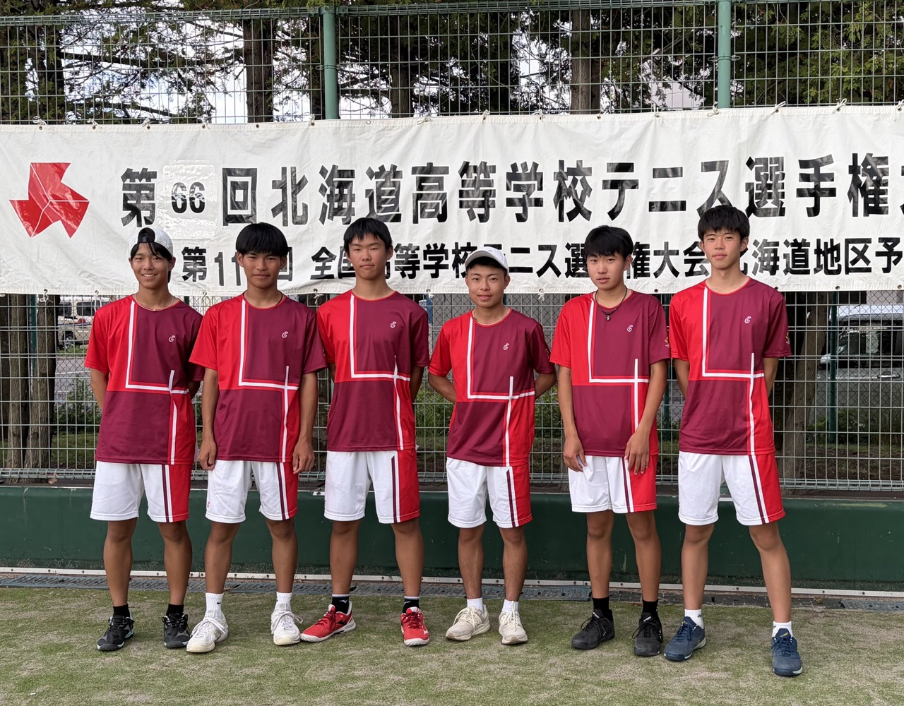
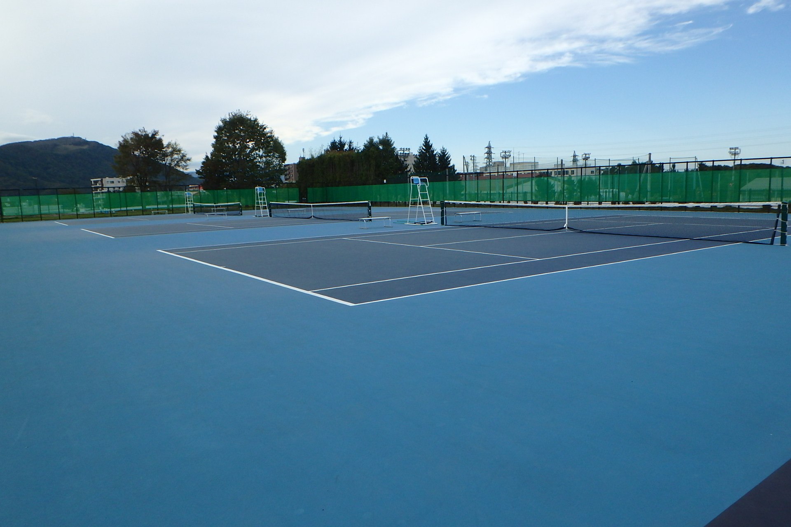
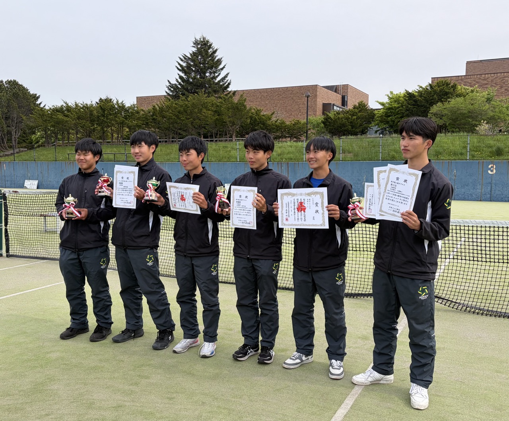

ABOUT
男子テニス部について
学習と部活動の両立で、
「文武両道」を体現する。
毎年コンスタントに活躍できるチームを目指し、団体戦での全道優勝および全国大会出場を最大の目標に、単にテニスの技術を向上させることだけでなく、コート上での困難に真正面から立ち向かう姿勢や、仲間と切磋琢磨する過程を大切にしています。
また、「学習」と「部活動」への真剣な取り組みを両立させる『文武両道』を徹底しています。限られた時間を有効に使い、自己管理能力を高めることで、心身ともに大きく成長できる環境がここにあります。

令和8年度北海道高等学校テニス出場メンバー
チーム体制
顧問
- 顧問中島 正人（ 英語 ）
- 副顧問山西 浩司（ 情報 ）
部長・副部長
- 部長（1年部長）小澤 奏斗（ 熊谷 直翔 ）
- 副部長（1年副部長）藤山 耕太郎（ 片桐 陽奏 ）
部員数 (2026年4月現在)
13名
ENVIRONMENT
練習環境
北海道の冬を乗り越える
本校テニスコート２面を使用し、日々精力的に練習を行っています。北海道の冬季はどの高校でも練習時間が劇的に制限され、基礎体力の低下や実戦感覚の鈍りが課題となります。
しかし本校では、民間のインドアコート（NEO、アルマトーレ等）や北海きたえーるを積極的に利用し、充実した練習環境を整えています。

週間スケジュール
平日
16:00〜日没までコート練習。（毎週火曜日は基本的に休み）
土日
実戦を想定したマッチ練習、および他校との練習試合を中心に活動。
平日
レギュラー中心に週5回のインドアコート練習（NEO等、17:00〜19:00）。
火曜日は校内で徹底したフィジカルトレーニング。
土日
いずれかは休養日とし、リカバリーと学習時間に充てる。
遠征
-
[11月上旬]・三笠遠征（日帰り）
[1月上旬]・深川合宿（1泊2日）
ACHIEVEMENTS
大会実績
「全道優勝」そして「全国」へ。
日々の鍛錬により、これまで築き上げた大会実績の数々。

インターハイ (全国高校総体) 北海道大会
- 優勝 シングルス (彦野) 全国大会出場
- 準優勝 ダブルス (小澤・石井ペア) 全国大会出場
- 第3位 シングルス (小澤) 全国大会出場
- 第3位 団体戦
北海道ジュニア室内選手権
- 優勝 U-16シングルス (小澤)
- 準優勝 U-16ダブルス (小澤・熊谷ペア)
- 第3位 U-18シングルス (彦野)
- 第3位 U-18ダブルス (彦野・石井ペア)
選抜全道秋季大会（団体）
全道優勝
（8年ぶりの快挙）
北海道ジュニアテニス選手権
- 優勝 U-16シングルス (彦野) 全日本出場
- 第3位 U-16シングルス (石井) 全日本出場
- 準優勝 U-16ダブルス (彦野・石井ペア) 全日本出場
U-15全国選抜ジュニア
- 優勝 シングルス (小澤) 中牟田杯出場
MUFGジュニア
- 優勝シングルス (小澤) 全国大会出場
他、インターハイ全道ベスト8など多数。
インターハイ地区大会（団体戦）
- 準優勝 全道大会ベスト8全道出場
北海道ジュニアテニス選手権
- ベスト4 U-16シングルス (彦野) 全日本出場
U-15全国選抜ジュニア
- 準優勝 シングルス (彦野) 中牟田杯出場
お問い合わせ・見学申込
練習参加や見学をご希望の中学生・保護者の方は、下記のメールからお問い合わせください。
※出身中学校、生徒氏名、連絡先電話番号（本人or保護者が分かるように）を明記の上、ご参加ください。
顧問：中島 正人